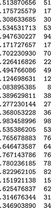
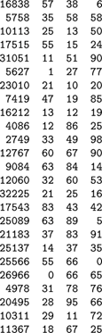
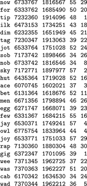
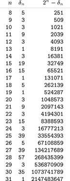
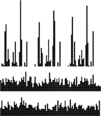
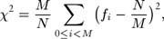
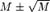

C++ Programming Robert Sedgewick - Princeton University Addison Wesley Professional Algorithms in C++, Parts 1–4: Fundamentals, Data Structure, Sorting, Searching, Third Edition C++ Programming Robert Sedgewick - Princeton University Addison Wesley Professional Algorithms in C++, Parts 1–4: Fundamentals, Data Structure, Sorting, Searching, Third Edition
14.1. Hash Functions
The first problem that we must address is the computation of the hash function, which transforms keys into table addresses. This arithmetic computation is normally simple to implement, but we must proceed with caution to avoid various subtle pitfalls. If we have a table that can hold M items, then we need a function that transforms keys into integers in the range [0,M – 1]. An ideal hash function is easy to compute and approximates a random function: For each input, every output should be in some sense equally likely.
The hash function depends on the key type. Strictly speaking, we need a different hash function for each kind of key that might be used. For efficiency, we generally want to avoid explicit type conversion, striving instead for a throwback to the idea of considering the binary representation of keys in a machine word as an integer that we can use for arithmetic computations. Hashing predates high-level languages—on early computers, it was common practice to view a value as a string key at one moment and an integer the next. Some high-level languages make it difficult to write programs that depend on how keys are represented on a particular computer, because such programs, by their very nature, are machine dependent and therefore are difficult to transfer to a new or different computer. Hash functions generally are dependent on the process of transforming keys to integers, so machine independence and efficiency are sometimes difficult to achieve simultaneously in hashing implementations. We can typically hash simple integer or floating-point keys with just a single machine operation, but string keys and other types of compound keys require more care and more attention to efficiency.
Perhaps the simplest situation is when the keys are floating-point numbers known to be in a fixed range. For example, if the keys are numbers that are greater than 0 and less than 1, we can just multiply by M and round off to the nearest integer to get an address between 0 and M – 1; an example is given in Figure 14.1. If the keys are greater than s and less than t for any fixed s and t, we can rescale by subtracting s and dividing by t–s, which puts them between 0 and 1, then multiply by M to get a table address.
To transform floating-point numbers between 0 and 1 into table indices for a table of size 97, we multiply by 97. In this example, there are three collisions: at 17, 53, and 76. The most significant bits of the keys determine the hash values; the least significant bits of the keys play no role. One goal of hash-function design is to avoid such imbalance by having each bit of data play a role in the computation.

If the keys are w-bit integers, we can convert them to floating-point numbers and divide by 2w to get floating-point numbers between 0 and 1, then multiply by M as in the previous paragraph. If floating-point operations are expensive and the numbers are not so large as to cause overflow, we can accomplish the same result with integer arithmetic operations: Multiply the key by M, then shift right w bits to divide by 2w (or, if the multiply would overflow, shift then multiply). Such functions are not useful for hashing unless the keys are evenly distributed in the range, because the hash value is determined only by the leading digits of the keys.
A simpler and more efficient method for w-bit integers—one that is perhaps the most commonly used method for hashing—is to choose the table size M to be prime, and, for any integer key k, to compute the remainder when dividing k by M, or h (k) = k mod M. Such a function is called a modular hash function. It is very easy to compute (k % M, in C++), and is effective in dispersing the key values evenly among the values less than M. Figure 14.2 gives a small example.
The three rightmost columns show the result of hashing the 16-bit keys on the left with these functions: v % 97 (left) v % 100 (center) and (int) (a * v) % 100 (right) where a = .618033. The table sizes for these functions are 97, 100, and 100, respectively. The values appear random (because the keys are random). The center function (v % 100) uses just the rightmost two digits of the keys and is therefore susceptible to bad performance for nonrandom keys.

We can also use modular hashing for floating-point keys. If the keys are in a small range, we can scale to convert them to numbers between 0 and 1, multiply by 2w to get a w-bit integer result, then use a modular hash function. Another alternative is just to use the binary representation of the key (if available) as the operand for the modular hashing function.
Modular hashing applies whenever we have access to the bits that our keys comprise, whether they are integers represented in a machine word, a sequence of characters packed into a machine word, or any of a myriad of other possibilities. A sequence of random characters packed into a machine word is not quite the same as a random integer key, because some of the bits are used for encoding purposes, but we can make both (and any other type of key that is encoded so as to fit in a machine word) appear to be random indices into a small table.
Figure 14.3 illustrates the primary reason that we choose the hash table size M to be prime for modular hashing. In this example, for character data with 7-bit encoding, we treat the key as a base-128 number—one digit for each character in the key. The word now corresponds to the number 1816567, which also can be written as
110.1282 + 111.1281 + 119.1280
since the ASCII encodings of n, o, and w are 1568 = 110, 1578 = 111, and 1678= 119, respectively. Now, the choice of table size M = 64 is unfortunate for this type of key, because the value of x mod 64 is unaffected by the addition of multiples of 64 (or 128) to x— the hash function of any key is the value of that key's last 6 bits. Surely a good hash function should take into account all the bits of a key, particularly for keys made up of characters. Similar effects can arise whenever M has a factor that is a power of 2. The simplest way to avoid such effects is to make M prime.
Each line in this table shows a 3-character word, that word's ASCII encoding as a 21-bit number in octal and decimal, and standard modular hash functions for table sizes 64 and 31, respectively (right-most two columns). The table size 64 leads to undesirable results, because only the rightmost bits of the keys contribute to the hash value, and characters in natural-language words are not evenly distributed. For example, all words ending in y hash to the value 57. By contrast, the prime value 31 leads to fewer collisions in a table less than one-half the size.

Modular hashing is completely trivial to implement except for the requirement that we make the table size prime. For some applications, we can be content with a small known prime, or we can look up a prime number close to the table size that we want in a list of known primes. For example, numbers of the form 2t – 1 are prime for t = 2, 3, 5, 7, 13, 17, 19, and 31 (and no other t < 31): these are the famous Mersenne primes. To allocate a table of a certain size dynamically, we would need to compute a prime number close to a certain value. This calculation is not a trivial one (although there is a clever algorithm for the task, which we shall examine in Part 5), so, in practice, a common solution is to use a precomputed table (see Figure 14.4). Use of modular hashing is not the only reason to make a table size prime; we shall consider another reason in Section 14.4.
This table of the largest prime less than 2n for 8  n 32 can be used to dynamically allocate a hash table, when it is required that the table size be prime. For any given positive value in the range covered, we can use this table to get a prime number within a factor of 2 of that value. n 32 can be used to dynamically allocate a hash table, when it is required that the table size be prime. For any given positive value in the range covered, we can use this table to get a prime number within a factor of 2 of that value.

Another alternative for integer keys is to combine the multiplicative and modular methods: Multiply the key by a constant between 0 and 1, then reduce it modulo M. That is, use the function h(k) =  kα kα mod M. There is interplay among the values of α, M, and the effective radix of the key that could possibly result in anomalous behavior, but if we use an arbitrary value of α, we are not likely to encounter trouble in a practical application. A popular choice for α is ø = 0.618033 ... (the golden ratio). Many other variations on this theme have been studied, particularly hash functions that can be implemented with efficient machine instructions such as shifting and masking (see reference section). mod M. There is interplay among the values of α, M, and the effective radix of the key that could possibly result in anomalous behavior, but if we use an arbitrary value of α, we are not likely to encounter trouble in a practical application. A popular choice for α is ø = 0.618033 ... (the golden ratio). Many other variations on this theme have been studied, particularly hash functions that can be implemented with efficient machine instructions such as shifting and masking (see reference section).
In many applications where symbol tables are used, the keys are not numbers and are not necessarily short, but rather are alphanumeric strings and possibly are long. How do we compute the hash function for a word such as
averylongkey?
In 7-bit ASCII, this word corresponds to the 84-bit number
97·12811 + 118·12810 + 101·1289 + 114·1288 + 121.1287
+ 108·1286 + 111·1285 + 110·1284 + 103·1283
+ 107·1282 + 101·1281 + 121·1280,
which is too large to be represented for normal arithmetic functions in most computers. Moreover, we should be able to handle keys that are much longer.
To compute a modular hash function for long keys, we transform the keys piece by piece. We can take advantage of arithmetic properties of the mod function and use Horner's algorithm (see Section 4.9).
Program 14.1. Hash function for string keys|
This implementation of a hash function for string keys involves one multiplication and one addition per character in the key. If we were to replace the constant 127 by 128, the program would simply compute the remainder when the number corresponding to the 7-bit ASCII representation of the key was divided by the table size, using Horner's method. The prime base 127 helps us to avoid anomalies if the table size is a power of 2 or a multiple of 2.
int hash(char *v, int M)
{ int h = 0, a = 127;
for (; *v != 0; v++)
h = (a*h + *v) % M;
return h;
}
|
This method is based on yet another way of writing the number corresponding to keys. For our example, we write the following expression:
((((((((((97·128 + 118)·128 + 101)·128 + 114)·128 + 121)·128
+ 108)·128 + 111)·128 + 110)·128 + 103)·128
+ 107)·128 + 101)·128 + 121.
That is, we can compute the decimal number corresponding to the character encoding of a string by proceeding left to right, multiplying the accumulated value by 128, then adding the encoded value of the next character. This computation would eventually produce a number larger than we can represent in our machine for a long string, but we are not interested in computing the number; we want just its remainder when divided by M, which is small. We can get our result without ever carrying a large accumulated value, because we can cast out multiples of M at any point during this computation—we need to keep only the remainder modulo M each time that we do a multiply and add—and we get the same result as we would if we had the capability to compute the long number, then to do the division (see Exercise 14.10). This observation leads to a direct arithmetic way to compute modular hash functions for long strings; see Program 14.1. The program uses one final twist: It uses the prime 127 instead of the base 128. The reason for this change is discussed in the next paragraph.
Program 14.2. Universal hash function (for string keys)|
This program does the same computations as Program 14.1, but using pseudorandom coefficient values instead of a fixed radix, to approximate the ideal of having a collision between two given nonequal keys occur with probability 1/M. We use a crude random-number generator to avoid spending excessive time on computing the hash function.
int hashU(char *v, int M)
{ int h, a = 31415, b = 27183;
for (h = 0; *v != 0; v++, a = a*b % (M-1))
h = (a*h + *v) % M;
return (h < 0) ? (h + M) : h;
}
|
There are many ways to compute hash functions at approximately the same cost as doing modular hashing using Horner's method (one or two arithmetic operations for each character in the key). For random keys, the methods hardly differ, but real keys are hardly random. The opportunity to economically make real keys appear to be random leads us to consider randomized algorithms for hashing—we want hash functions that produce random table indices, no matter what the keys are. Randomization is not difficult to arrange, because there is no requirement that we stick to the letter of the definition of modular hashing—we merely want to involve all the bits of the key in a computation that produces an integer less than M. Program 14.1 shows one way to do that: Use a prime base, instead of the power of 2 called for in the definition of the integer corresponding to the ASCII representation of the string. Figure 14.5 illustrates how this change avoids poor dispersion for typical string keys. The hash values produced by Program 14.1 could theoretically be bad for table sizes that are a multiple of 127 (although these effects are likely to be minimal in practice); we could choose the multiplier value at random to produce a randomized algorithm. An even more effective approach is to use random values for the coefficients in the computation, and a different random value for each digit in the key. This approach gives a randomized algorithm called universal hashing.
These diagrams show the dispersion for a set of English words (the first 1000 distinct words of Melville's Moby Dick) using Program 14.1 with M = 96 and a = 128 (top) M = 97 and a = 128 (center) and M = 96 and a = 127 (bottom) Poor dispersion in the first instance results from the combination of uneven usage of the letters and the common factor 32 in the table size and multiplier, which preserves the unevenness. The other two instances appear random because the table size and the multiplier are relatively prime.

A theoretically ideal universal hash function is one for which the chance of a collision between two distinct keys in a table of size M is precisely 1/M. It is possible to prove that using a sequence of different random values, instead of a fixed arbitrary value, for the coefficient a in Program 14.1 turns modular hashing into a universal hash function. However, the cost of generating a new random number for each character in the key is likely to be prohibitive. Program 14.2 demonstrates a practical compromise: We vary the coefficients by generating a simple pseudorandom sequence.
In summary, to use hashing for an abstract symbol-table implementation, the first step is to extend the abstract type interface to include a hash operation that maps keys into nonnegative integers less than M, the table size. The direct implementation
inline int hash(Key v, int M)
{ return (int) M*(v-s)[/](t-s); }
does the job for floating-point keys between the values s and t; for integer keys, we can simply return v % M. If M is not prime, the hash function might return
(int) (.616161 * (float) v) % M
or the result of a similar integer computation such as
(16161 * (unsigned) v) % M.
All of these functions, including Program 14.1 for string keys, are venerable ones that usually spread out the keys and have served programmers well for years. The universal method of Program 14.2 is a distinct improvement for string keys that provides random hash values at little extra cost, and we can craft similar randomized methods for integer keys (see Exercise 14.1).
Universal hashing could prove to be much slower than simpler methods in a given application, because doing two arithmetic operations for each character of the key could be overly time-consuming for long keys. To respond to this objection, we can process the key in bigger pieces. Indeed, we may as well use the largest pieces that can fit into a machine word, as in elementary modular hashing. As we discussed in detail previously, an operation of this kind can be difficult or can require special loopholes in some strongly typed high-level languages, but it can be inexpensive or require absolutely no work in C++ if we use casting among appropriate data-representation formats. These factors are important to consider in many situations because the computation of the hash function might be in the inner loop, so, by speeding up the hash function, we might speed up the whole computation.
Despite the evidence in favor of these methods, care is required in implementing them, for two reasons. First, we have to be vigilant to avoid bugs when converting among types and using arithmetic functions on various different machine representations of keys. Such operations are notorious sources of error, particularly when a program is converted from an old machine to a new one with a different number of bits per word or with other precision differences. Second, the hash-function computation is likely to fall in the inner loop in many applications, and its running time may well dominate the total running time. In such cases, it is important to be sure that it reduces to efficient machine code. Such operations are notorious sources of inefficiency—for example, the difference in running time between the simple modular method and the version where we multiply by 0.61616 first can be startling on a machine with slow hardware or software for floating-point operations. The fastest method of all, for many machines, is to make M a power of 2, and to use the hash function
inline int hash(Key v, int M)
{ return v & (M-1); }
This function uses only the least-significant bits of the keys, but the bitwise and operation may be sufficiently faster than integer division to offset any ill effects from poor key dispersion.
A bug that typically arises in hashing implementations is for the hash function always to return the same value, perhaps because an intended type conversion did not take place properly. Such a bug is called a performance bug because a program using such a hash function is likely to run correctly, but to be extremely slow (because it was designed to be efficient only when the hash values are well dispersed). The one-line implementations of these functions are so easy to test that we are well-advised to check how well they perform for the types of keys that are to be encountered for any particular symbol-table implementation.
We can use a x2 statistic to test the hypothesis that a hash function produces random values (see Exercise 14.5), but this requirement is perhaps too stringent. Indeed, we might be happy if the hash function produces each value the same number of times, which corresponds to a x2 statistic that is equal to 0, and is decidedly not random. Still, we should be suspicious of huge x2 statistics. In practice, it probably suffices to use a test that the values are sufficiently well-spread that no value dominates (see Exercise 14.15). In the same spirit, a well-engineered implementation of a symbol-table implementation based on universal hashing might occasionally check that hash values are not poorly dispersed. The client might be informed that either a low-probability event has happened or there is a bug in the hash function. This kind of check would be a wise addition to any practical randomized algorithm.
Exercises |  14.1 Using the digit abstraction from Chapter 10 to treat a machine word as a sequence of bytes, implement a randomized hash function for keys represented as bits in machine words. 14.1 Using the digit abstraction from Chapter 10 to treat a machine word as a sequence of bytes, implement a randomized hash function for keys represented as bits in machine words.
| | 14.2 Check whether there is any execution-time overhead in converting from a 4-byte key to a 32-bit integer in your programming environment. | |
 14.3 Develop a hash function for string keys based on the idea of loading 4 bytes at a time, then performing arithmetic operations on 32 bits at a time. Compare the time required for this function with the times for Program 14.1 for 4-, 8-, 16-, and 32-byte keys.
14.3 Develop a hash function for string keys based on the idea of loading 4 bytes at a time, then performing arithmetic operations on 32 bits at a time. Compare the time required for this function with the times for Program 14.1 for 4-, 8-, 16-, and 32-byte keys. | | 14.4 Write a program to find values of a and M, with M as small as possible, such that the hash function a*x % M produces distinct values (no collisions) for the keys in Figure 14.2. The result is an example of aperfect hash function. | |
14.5 Write a program to compute the x2 statistic for the hash values of N keys with table size M. This number is defined by the equation

where fi is the number of keys with hash value i. If the hash values are random, this statistic, for N > cM, should be M
 with probability 1–1/c. | | 14.6 Use your program from Exercise 14.5 to evaluate the hash function 618033*x % 10000 for keys that are random positive integers less than 106. | | 14.7 Use your program from Exercise 14.5 to evaluate the hash function in Program 14.1 for distinct string keys taken from some large file on your system, such as a dictionary. | |
 14.8 Suppose that keys are t-bit integers. For a modular hash function with prime M, prove that each key bit has the property that there exist two keys differing only in that bit with different hash values.
14.8 Suppose that keys are t-bit integers. For a modular hash function with prime M, prove that each key bit has the property that there exist two keys differing only in that bit with different hash values. | | | | 14.9 Consider the idea of implementing modular hashing for integer keys with the code (a*x) % M, where a is an arbitrary fixed prime. Does this change mix up the bits sufficiently well that you can use nonprime M? | | 14.10 Prove that (((ax) mod M) + b) mod M = (ax + b) mod M, assuming that a, b, x, and M are all nonnegative integers. | |
14.11 If you use the words from a text file, such as a book, in Exercise 14.7, you are unlikely to get a good x2 statistic. Explain why this assertion is true. | | 14.12 Use your program from Exercise 14.5 to evaluate the hash function 97*x % M, for all table sizes between 100 and 200, using 103 random positive integers less than 106 as keys. | | 14.13 Use your program from Exercise 14.5 to evaluate the hash function 97*x % M, for all table sizes between 100 and 200, using the integers between 102 and 103 as keys. | | 14.14 Use your program from Exercise 14.5 to evaluate the hash function 100*x % M, for all table sizes between 100 and 200, using 103 random positive integers less than 106 as keys. | | 14.15 Do Exercises 14.12 and 14.14, but use the simpler criterion of rejecting hash functions that produce any value more than 3N/M times. |
|